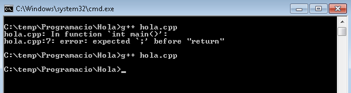
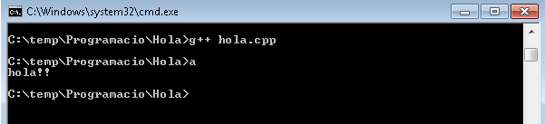

1.4 EL MEU PRIMER PROGRAMA
- Un fitxer *.cpp on hi hagi el codi que cal executar amb la funció principal(main) i els altres possibles elements.
- Un compilador i un linkador, com ara el g++ (gcc).
Per compilar i linkar, s'obre un terminal on s'hagi guardat l'arxiu (en Windows es amb shift + botó dret -> "Abrir ventana de comandos aquí"). En el terminal utilitzem el g++ per compilar i linkar. Això es faria amb la comanda g++ nom_fitxer.cpp. Aquesta comanda compila i linka l'executable, i mostra, si n'hi ha, els errors de compilació i/o linkatge indicant la línia on apareixen i una petita explicació:

A l'imatge es fan dos crides, una amb un error, i l'altre després de corregir l'error, compilant i linkant amb èxit en aquest cas. En el cas de que tot vagi bé, el g++ ens genera un fitxer executable (a.exe en windows) el qual podem executar en el mateix terminal escribint a al terminal.

Per escollir el nom de l'executable al compilar, es pot fer amb la comanda g++ -o nom_executable.exe nom_codi.cpp. Ara per executar el resultat, escriuriem nom_executable.